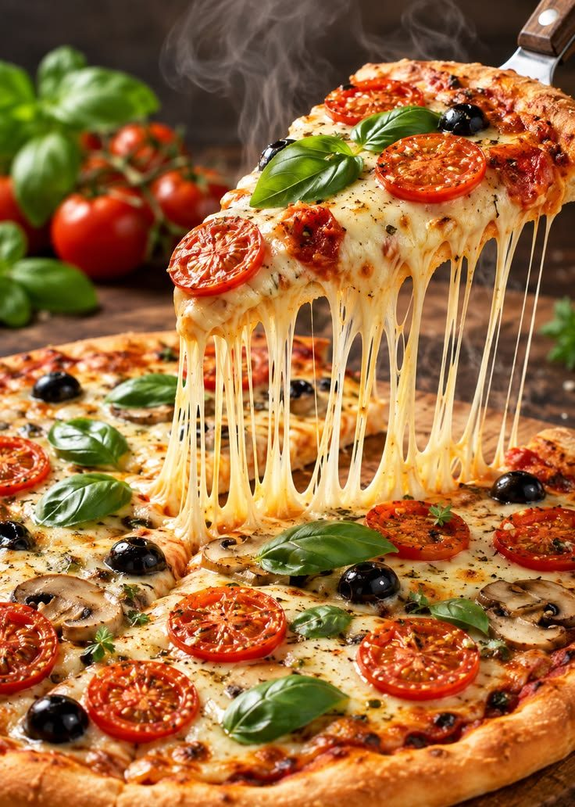

Sobre
Prato Limpo, consciência tranquila
Origem e Intuito do Projeto

É comum a tecnologia ser vista como algo puramente abstrato ou corporativo. No entanto, acreditamos que o papel da universidade pública é quebrar essas barreiras por meio da extensão universitária — que é justamente o elo de ligação entre o conhecimento científico gerado no campus e as necessidades do cotidiano da sociedade.
O intuito principal desse projeto e da nossa página é criar uma ponte de comunicação direta, acessível e simplificada com a comunidade. Queremos utilizar os recursos digitais e a nossa capacidade de organização de sistemas para centralizar, estruturar e disseminar conteúdos que façam a diferença na rotina de qualquer cidadão.
Metodologia e Expectativa de Impacto
Para alcançar os objetivos, estamos estruturando canais de comunicação com uma identidade visual acolhedora e uma linguagem simples, de modo que qualquer pessoa consiga aplicar as dicas imediatamente.
Ao unir ferramentas que aprendemos em Sistemas de Informação com a pesquisa sobre sustentabilidade e economia, pretendemos:
- Reduzir a pegada de desperdício orgânico na nossa região.
- Ajudar famílias a economizarem dinheiro através do aproveitamento integral dos alimentos.
- Promover a educação ambiental de forma leve e interativa.
Em resumo, este projeto de extensão reflete o nosso compromisso como futuras profissionais de tecnologia e como cidadãs. Acreditamos que grandes mudanças começam com pequenas ações diárias e com a democratização da informação.
Agradecemos a atenção e estamos abertas a perguntas, feedbacks e sugestões para enriquecer ainda mais a nossa iniciativa. Muito obrigada!